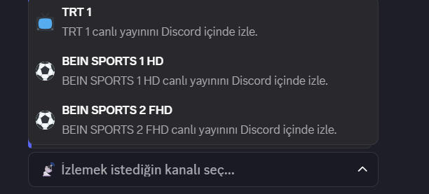
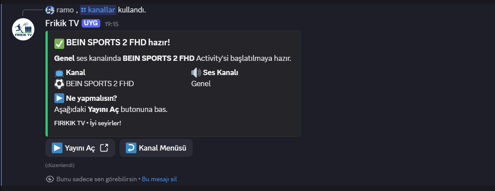
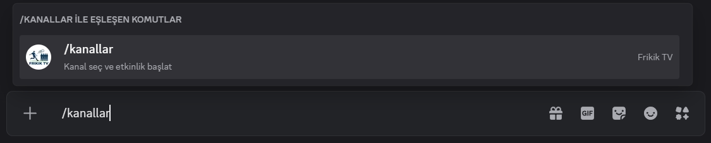

Ana kanal menüsü
Kullanıcı /kanallar komutu ile desteklenen kanalları tek ekranda görür.
FIRIKIK TV, Discord içindeki ses kanalında Activity olarak canlı TV kanallarını başlatmanı sağlayan bir bottur. Kanal seç, butona bas, yayını aç. Bu kadar basit.
Bot, Discord içinde kanal seçimini kolaylaştırır ve ilgili Activity’yi tek tuşla başlatmana yardımcı olur. Karmaşık işlem yok, gereksiz uğraş yok.
/kanallar komutunu kullan, kanalını seç ve birkaç tıkla yayını aç.
Basit akış, temiz görünüm.
Yayın deneyimi doğrudan Discord Activity mantığına göre çalışır. Kullanıcı için doğal ve tanıdık bir kullanım sunar.
Kanal menüsü, başlatma ekranı ve yönlendirme butonları ile sade ama güven veren bir kullanım deneyimi sunar.
FIRIKIK TV’nin mantığı çok basit. Kullanıcıyı teknik detaylarla uğraştırmaz.
Sunucunda /kanallar komutunu kullan. Bot sana desteklenen kanalları menü halinde gösterir.
İzlemek istediğin kanalı seçersin. Bot seçtiğin kanal için Activity başlatma ekranını hazırlar.
Yayını Aç butonuna tıklarsın. Activity açılır ve yayın Discord içinde izlenebilir hale gelir.
Şu anda bot üzerinde aktif olarak kullanılabilen örnek kanallar aşağıdaki gibidir.
Temel canlı yayın kanalları
Maç ve spor yayınları için
Evet — FIRIKIK TV’nin ne yaptığını açıkça anlatmak önemli. İnsanların çekinmemesi için mantığı net olmalı.
Aşağıda botun Discord içindeki gerçek kullanım akışından alınmış ekran görüntüleri yer alıyor.
Kullanıcı /kanallar komutu ile desteklenen kanalları tek ekranda görür.

TRT 1, BEIN SPORTS 1 HD ve BEIN SPORTS 2 FHD gibi kanallar menüden seçilebilir.

Seçilen kanal için kısa açıklama ve başlatma adımları gösterilir.

Bot, Activity linkini oluşturarak kullanıcıya yayını başlatması için sunar.

Yayın açıldığında kullanıcı Discord içindeki Activity alanında içeriği görüntüler.

Activity, ses kanalı deneyimi ile birlikte doğal şekilde çalışır.

Botun komutları Discord’un modern komut sistemine uyumlu biçimde görünür.
Kullanıcıların en çok merak edeceği noktaları baştan netleştirmek güven verir.
Discord sunucusunda canlı TV Activity’lerini açmayı kolaylaştırır. Kullanıcı kanal seçer, bot Activity başlatma adımını hazırlar.
Bot senden şifre istemez, kişisel bilgi talep etmez. Temel amacı kanal seçimi ve Activity başlatma akışını pratik hale getirmektir.
Bir ses kanalına gir, /kanallar komutunu kullan,
izlemek istediğin kanalı seç ve gelen butondan yayını aç.
Şu an örnek olarak TRT 1, BEIN SPORTS 1 HD ve BEIN SPORTS 2 FHD destekleniyor. İleride yeni kanallar da eklenebilir.
Sunucunda düzenli, hızlı ve pratik bir canlı TV deneyimi istiyorsan FIRIKIK TV bunun için tasarlandı.